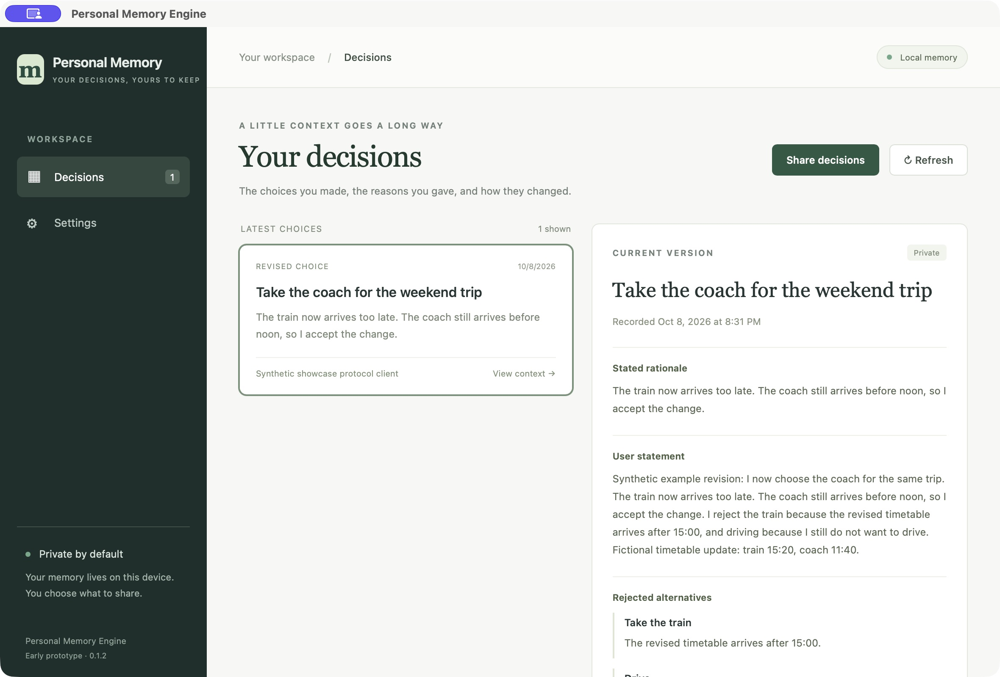
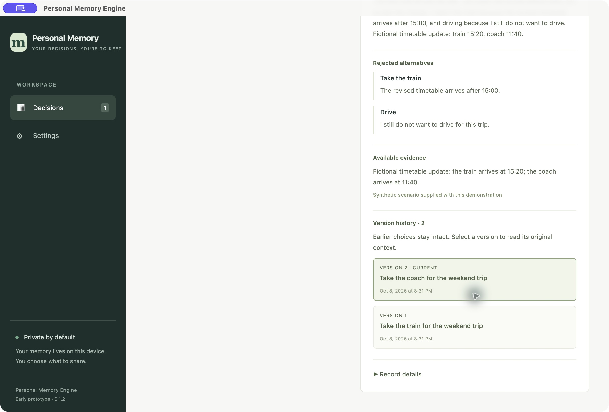
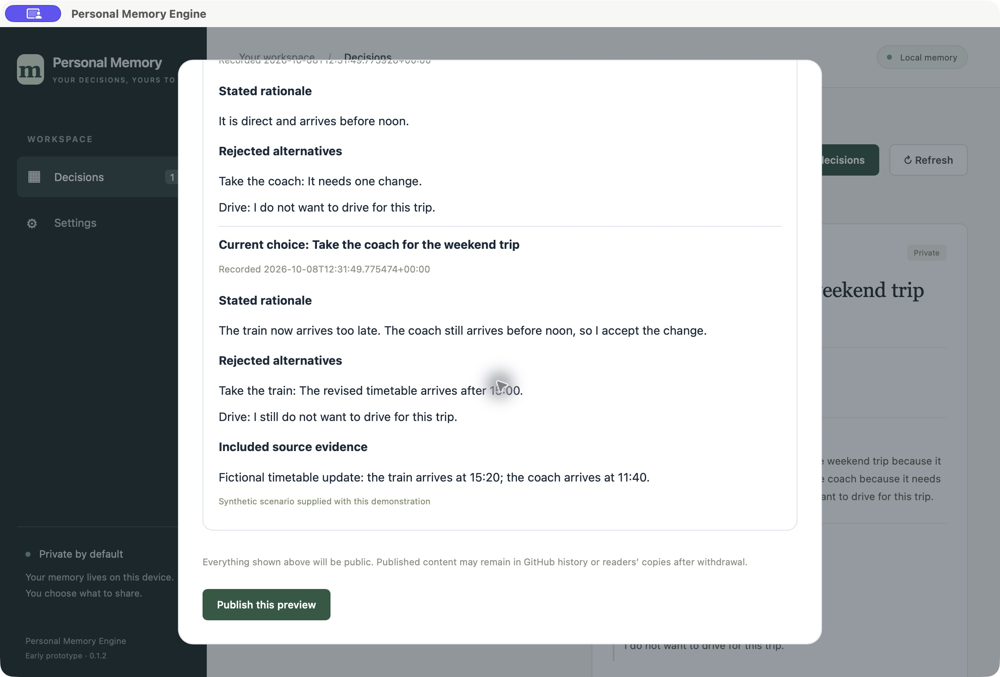

EARLIER CHOICE
Take the train
Direct. Arrives before noon.
LOCAL FIRST · OPEN SOURCE
You remember what you decided.
Now remember why—and what changed.
Chat with your AI as usual. A connected worker records your explicit choices through MCP. Personal Memory Engine keeps the decision, your stated reasons, and its history on your device.
Working local prototype · Rust + TypeScript · Apache 2.0

Chosen option, stated reasons, alternatives and supplied evidence. Unstated information stays absent.
A new version links to the earlier choice. You can read both, with their original reasoning.
Your memory stays local. Preview selected decisions before publishing a frozen, read-only copy.
THE WHOLE EXPERIENCE
A short, five-step walkthrough. The travel story below is fictional; its records were created through the real MCP helper in isolated storage. The screenshots show the actual app.
In the desktop app’s Settings, connect a supported AI worker. The worker can then call the local MCP tools when you make an explicit choice. You do not need to mention a plugin for every decision.
No chat scraping or monitoring. Connection support depends on the AI host.
“I choose the train for the weekend trip because it is direct and arrives before noon. I reject the coach because it needs one change, and driving because I do not want to drive.”
Fictional participant · scripted demonstration
The resulting card contains the choice, the reason and those alternatives. This initial version has no evidence, because the scenario did not supply any.
“I now choose the coach for the same trip. The train now arrives too late. The coach still arrives before noon, so I accept the change.”
Fictional participant · scripted revision
EARLIER CHOICE
Direct. Arrives before noon.
CURRENT CHOICE
The train timetable changed. Arriving before noon matters more.
The supplied fictional timetable is attached to the revision. Both versions were read back unchanged after restarting the MCP helper.
Read both versions and their full context →
Select a decision, then choose whether to include its earlier versions and supplied evidence. Review the public copy before publishing. Nothing is selected by default.

A frozen copy does not silently change when local memory changes. Withdrawal replaces the live page; downloaded copies and hosting history may remain.
A reader opens a static, read-only page without installing the app. The public page has no connection to your private database or recording tools.
The travel example is generated by the demo build. The notebook snapshot was separately selected and published through the installed app.
A SMALL APP WITH A CLEAR FOUNDATION
The project operates no service holding your memory. The local Rust engine handles decision integrity; TypeScript presents cards and history. MCP, SQLite, the desktop host and publishing each have their own boundary.
Explore the architecture →ON YOUR DEVICE
AI worker → MCP → Rust engine
Local SQLite memory
Owner’s desktop cards and history
ONLY AFTER YOU SELECT AND PREVIEW
A frozen public copy
Read-only HTML on your GitHub Pages account
BUILT, USED, IMPROVED
Local MCP recording, append-only history, desktop review, selected GitHub Pages sharing and verified withdrawal.
An initial recording attempt found the tool unavailable. Setup was changed to direct one-time MCP registration, and connection controls moved into Settings. The owner subsequently confirmed recording in ChatGPT Work.
Signed and notarized installation, fresh-user testing, backup/restore and broader host compatibility. The current macOS Apple Silicon preview remains unsigned.
The travel walkthrough verifies a scripted MCP flow; it does not claim to reproduce a live AI chat. Build verification receipt · Detailed evidence and limitations
BUILD THE NEXT PIECE
Contribute to presentation, worker adapters, guides and usability. Changes to decision integrity, storage and public disclosure require focused review.